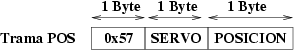
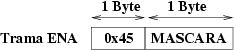
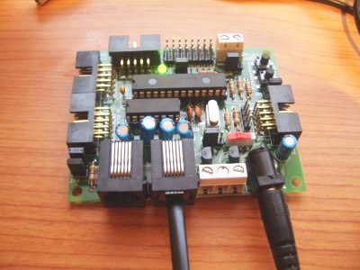
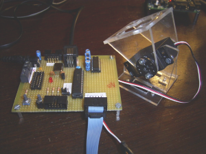
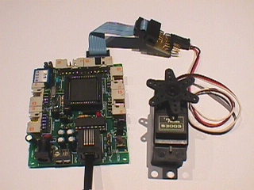

|
PROYECTO STARGATE: SERVIDOR SERVOS8 |
|
Servidor de control de servos para posicionar hasta 8 servos (tipo Futaba 3003 o compatibles) desde el PC. Muy útil para probar prototipos de robots. Por ejemplo, el robot Cube Revolutions utiliza este servidor para que un programa del PC envíe las secuencias de movimiento.
Este servidor implementa los servicios básicos y además dos específicos:
POS: Posicionamiento de un servo
ENA: Habilitación/deshabilitación de un servo
El funcionamiento del servidor es el siguiente:
Implementación de los servicios POS y ENA
Implementación de los servicios básicos : PING, ID.
Si recibe un byte que no reconoce, lo ignora
Inicialmente los servos están deshabilitados
Servicio POS
Este servicio es sólo de una dirección. El cliente envía la trama POS pero el servidor no devuelve ninguna respuesta. Se ha hecho así para que sea un servicio más "dinámico". La trama es de la siguiente manera:

El
byte de identificación de trama se corresponde con la letra
'W'. Los otros datos son:
Servo: Número de servo a posicionar, comprendido entre 1 y 8
Posición: Valor comprendido entre 0 (un extremo) y 232 (el otro extremo). La precisión que se tiene es de 0.77 grados.
Ejemplo:
Queremos posicionar el servo 1 en la posición central. El
cliente del PC envía los siguientes 3 bytes:
Trama enviada: 0x57 0x01 0x74
Servicio ENA
Servicio también unidireccional, del cliente al stargate, pero no hay respuesta. La trama es:

El campo máscara
indica qué servos están activos y cuales no. El bit de
menor peso se corresponde con el servo 1 y el de mayor peso con el
8. Cuando un bit esté a 1 el servo correspondiente estará
activado.
Ejemplo: Queremos habilitar los servos 4 y
7 y que los demás no lo estén. Se envían los
dos bytes siguientes:
Trama enviada: 0x45 0x48
|
TARJETA SKYPIC (20 MHZ) |
|

|
|
Configuración de la tarjeta Skypic:
Jumpers JP1, JP2, JP6 y JP7 puestos
Jumper JP4 en posición 1-2
Jumper JP5 en posición 3-2
Jumper JP3 en posición 1-2
|
Microcontrolador PIC16F876 a 4MHZ |
|

|
|
|
Tarjeta CT6811 |
|

|
|
Configuración de la tarjeta CT6811:
Jumper JP5 quitado
Jumper JP7 en posición OFF
Jumper JP8 puesto
Jumper JP4 en posición RST
Switch 2 a ON, resto a OFF (Modo single chip)
|
TARJETA SKYPIC |
|
Implementación para el Microcontrolador PIC16F876A, en una tarjeta SKYPIC. Lenguaje C |
|
|
Ejecutable |
|
PIC16F876A y Compatibles (a 4 Mhz) |
|
Implementación para el Microcontrolador PIC16F876A. Lenguaje ensamblador |
|
|
Ejecutable |
|
TARJETA CT6811 |
|
Tarjeta CT6811 con un 68hc11E2. Fichero fuente |
|
|
Tarjeta CT6811 con un 68hc11E2. Ejecutable |
Proyecto Stargate, Página principal
Servos Futaba 3003 :Descripción de los Servos Futaba 3003
Tarjeta Skypic: Tarjeta entrenadora para el microprocesador 16F786A de Microchip
Tarjeta PICUPSAM, Página principal
Tarjeta CT6811 :Tarjeta entrenadora para el microcontrolador 68HC11
Ensamblador gpasm para PICs
Compilador de C: SDCC, para 68hc08 y PICs
3/Abr/2007: Publicada implementación sg-servos8-pic16f876-skypic-1: Para tarjeta Skypic a 20Mhz
26/Dic/2003: Publicada implementación sg-servos8-pic16f876-xx-0
16/Oct/2003: Publicado servidor sg-servos8-6811e2-ct-0